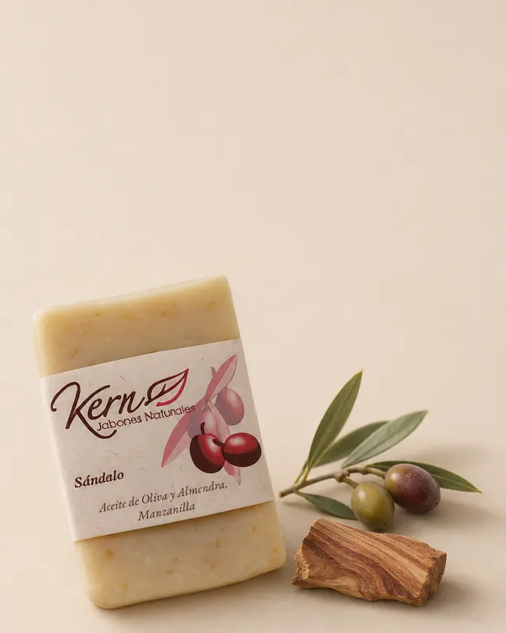
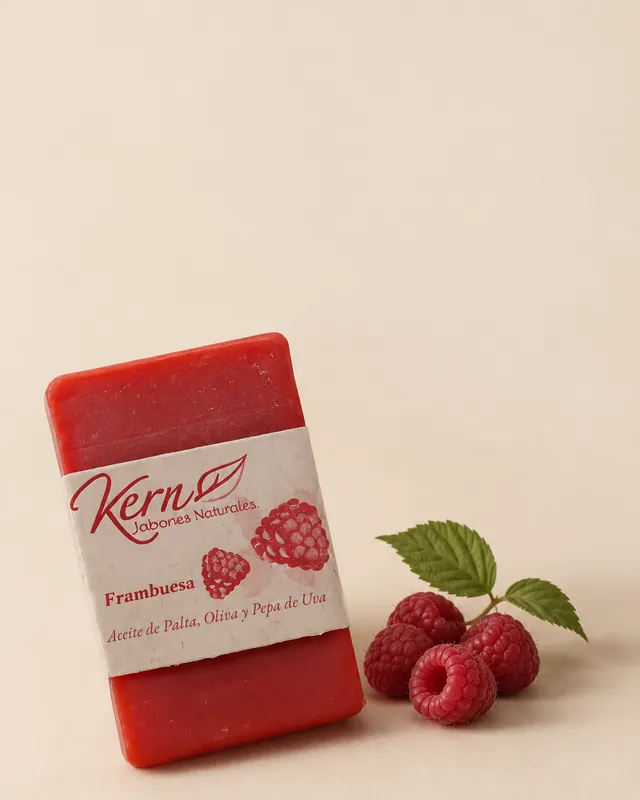
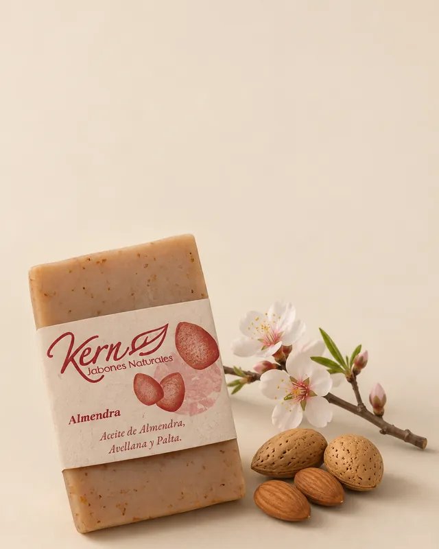
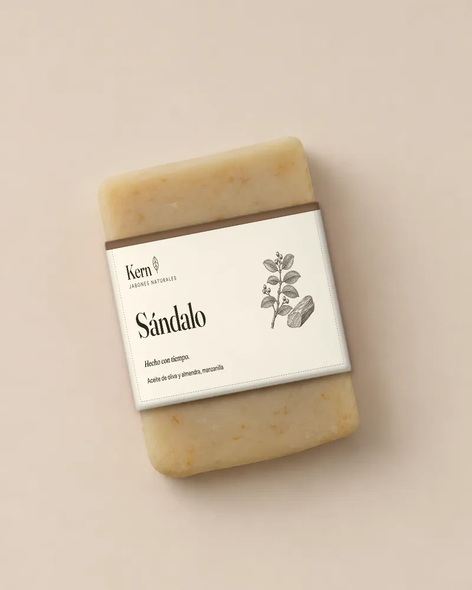
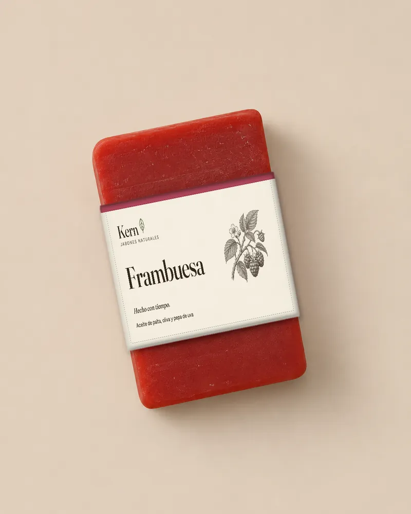
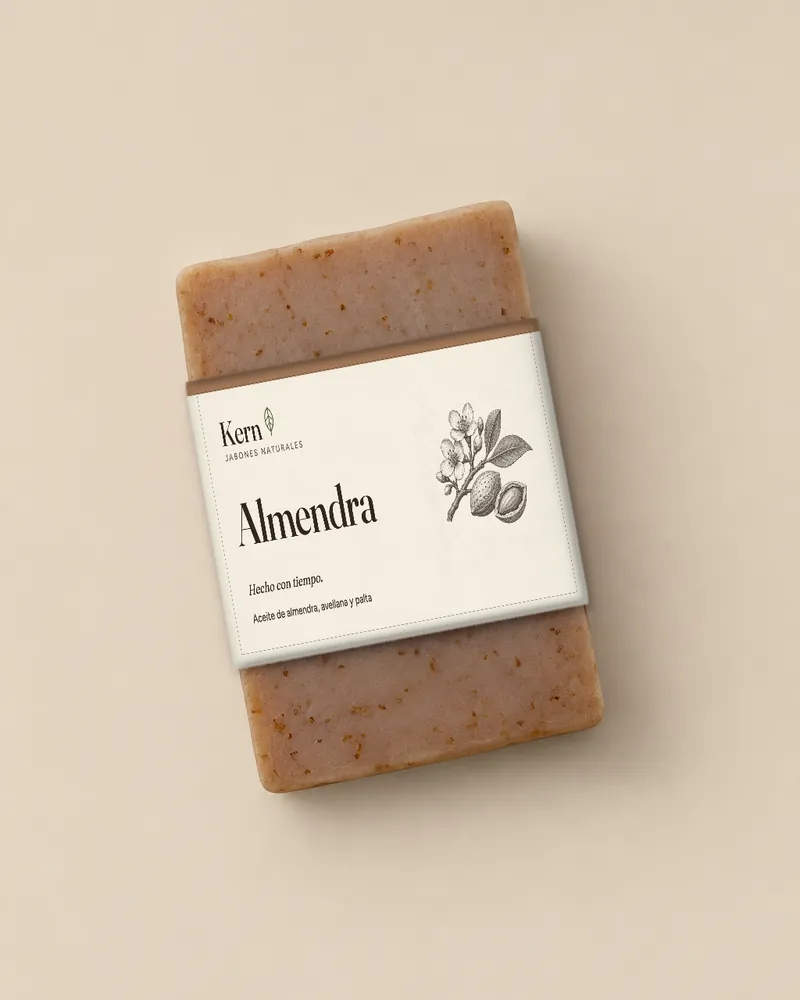

Hola!
Lo que vas a ver es un ejercicio, creado con herramientas de inteligencia artificial. Muestra lo que se puede hacer rápidamente y algunas de las posibilidades, para que puedas imaginar cómo podría ser Kern.
Propuesta no oficial. Parte de la información y las fotos públicas de kern.cl; nada de esto se ha publicado.
Hecho con tiempo.
Lo que no se ve en un jabón de Kern es el tiempo. Hay oficio en cada barra, y esa es la historia que proponemos contar.
Una idea, dos conversaciones
El mismo tiempo sostiene lo que le decimos a quien compra para sí y a la empresa que regala.
Lo hicimos con tiempo, para que lo uses o lo regales con la misma calma.
Un regalo que muestra que la empresa se tomó el tiempo.
Cómo es Kern
Lo que es
Lo que no es
Cómo suena Kern
Tuteo cercano, frases cortas y el dato del proceso por delante. Las afirmaciones de salud se revisarían con un especialista antes de repetirlas.
Colores de papel, tierra y hoja
Cálidos y apagados. El color vivo lo pondrían los jabones y sus aromas.
Dos tipografías
Fraunces para los titulares y Figtree para el texto.
Un grabado botánico por ingrediente
Una sola tinta y línea fina, como en un herbario.
← Desliza de lado para ver más →
Sin texto dentro de la imagen y con mucho aire alrededor.
Desde las fotos que ya tienes
Utilizando IA, se pueden cambiar fondos, luces y composición, dejando el producto intacto.
← Desliza de lado para ver más →
Una escena nueva para cada jabón
La misma barra, con sus ingredientes reales, para redes o campañas. Sirve para probar ideas antes de fotografiar de verdad.



← Desliza de lado para ver más →
La IA también ayuda a decidir qué producir
Antes de imprimir o fabricar, se puede ver cómo quedaría una idea puesta en el producto. Se descartan opciones rápido y se llega a la imprenta con una decisión más segura.
- Etiquetas y cintillosProbar un diseño nuevo sobre la barra real.
- Cajas, bolsas y tarjeta del regaloVer una idea nueva en los packs.
- Lista de tomasPreparar la sesión de fotos real en el taller.
Etiquetas nuevas, antes de imprimir



← Desliza de lado para ver más →
Exploración con textos de ejemplo. Las etiquetas actuales se conservarían hasta decidir juntos.
¿Y cómo podría verse el sitio?
Armamos una maqueta navegable con tres páginas, usando todo lo anterior. Se abre aparte, para que la recorras a tu ritmo.
Conócenos mejor.
Somos Plim Plam. Hacemos simple que personas y empresas le saquen provecho real a la inteligencia artificial, una tarea a la vez y con resultados pronto.
Propuesta no oficial de Plim Plam para Kern. Imágenes creadas y editadas con inteligencia artificial.